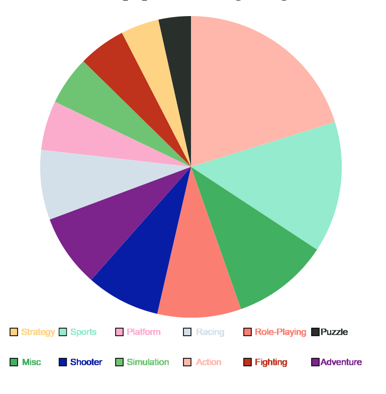

Methodology of Visualization
This is my methodology for my final project.
For my final project, i decided to use the database Video Game Sales in order to make my project. This database has a lot of records, over 16,000 records. This database in particular explores video games sales over the past few decades. Since this database explored the many video game sales of different games and platforms, i asked myself a few questions about the database in order to know what visualization to make.
I asked myself the question, what is the most popular video game genre from the years 1984-2020(which is how far the database goes.)
One of the first things i wanted to do in order to prepare for the visualization is that i had to decided what exactly to do, specifically with genre of the video games. I thought it would be beneficial to explore what genres of video games were the most popular. So, before getting started with the visualization i knew that i wanted to do a pie chart as my visulaization. I thought it would be interesting to see what were the most popular genres, and what still could be popular as of more recent.
Another thing i had to do in order to prepare for the exact visualization I wanted to do was that i had to do some data analysis in order to get more in the right direction of the pie chart. Unfortunately, the pie chart has more than 16,000 records so i had to make it so that it would equal 100. All i did to calculate this is divide the number of each genre by the total amount of records to get the percentage that i needed in order to make the pie chart.
For the acutual pie chart, theres a couple of things i had to think about. I wanted to make it so that when the user hovers over the pie chart, over the different variables, it would tell them what percentage each of the colors are. However, i was not able to make it work so i just decided to add a legend for the pie chart. For the acual legend, i decided to use p5.js as my method of choice of making the actual legend. Unfortunately, i was also not able to loop it using d3 so i had coded it below the actual pie chart.
Once i had the percentages of the pie chart, i actually constructed it using d3.js. For each of the colors, i tried to make it so it was stategic and not just random colors. For each of the categories, i placed strategically based on my perception of each of the genres. For example, with the genre 'racing', i tend to associate bright red with it. For platform games, i placed bright green due to the games that are associated with it.I think of the 'Super Mario' series, which contains very bright colors. For action games, since they tend to be darker than usual, i chose a dark grey color. For fighting games, i associate a dark red color, probably mimicking the color of blood on these games.
From this visualization i found that Action games were the most popular type of games from this time period of video game sales. Another very popular game genre would also be Sports games, which is a bit unexpected for me. I did not think that sports type of games were the most popular. The least popular genre would be puzzle games, which is also very surprising to me due to my personal experience with video games. Below is a sceenshot of the pie chart.
